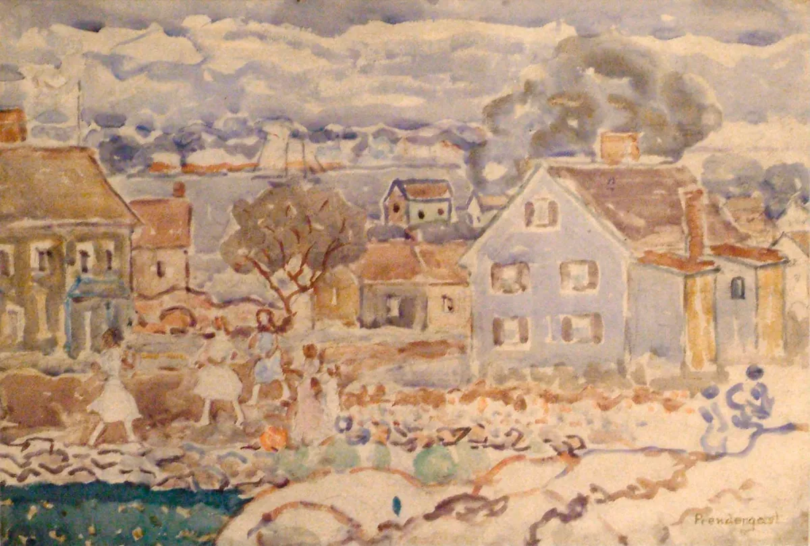

Prendergast
Glimpse of the Harbor, Gloucester
Maurice Prendergast, about 1916–1919

- Medium
- Watercolor over pencil
- Collection
- Newfields (Indianapolis Museum of Art)
- Accession no.
- 34.15
- Record checked
- Page-verified · public domain (CC0)
- Image rights
- Public-domain image
Source · note 69 Maurice Prendergast, Glimpse of the Harbor, Gloucester, about 1916–1919, watercolor over pencil, Newfields (Indianapolis Museum of Art), 34.15, accessed November 2026, https://collections.discovernewfields.org/art/artwork/56211. Page-verified · public domain (CC0).